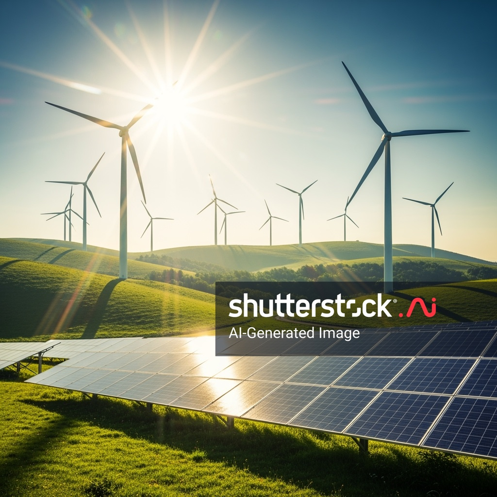
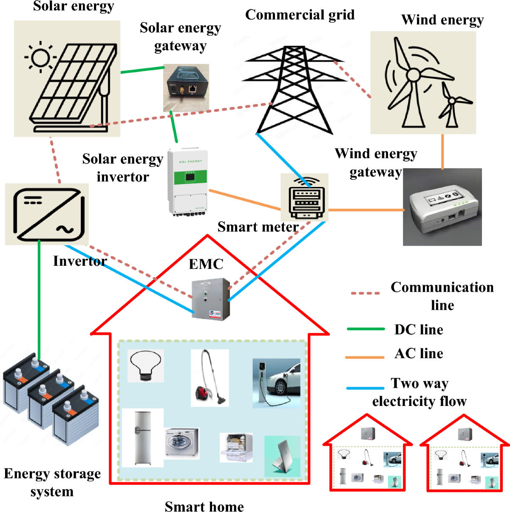
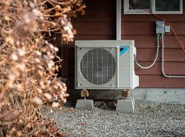
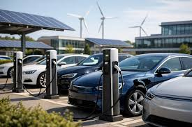
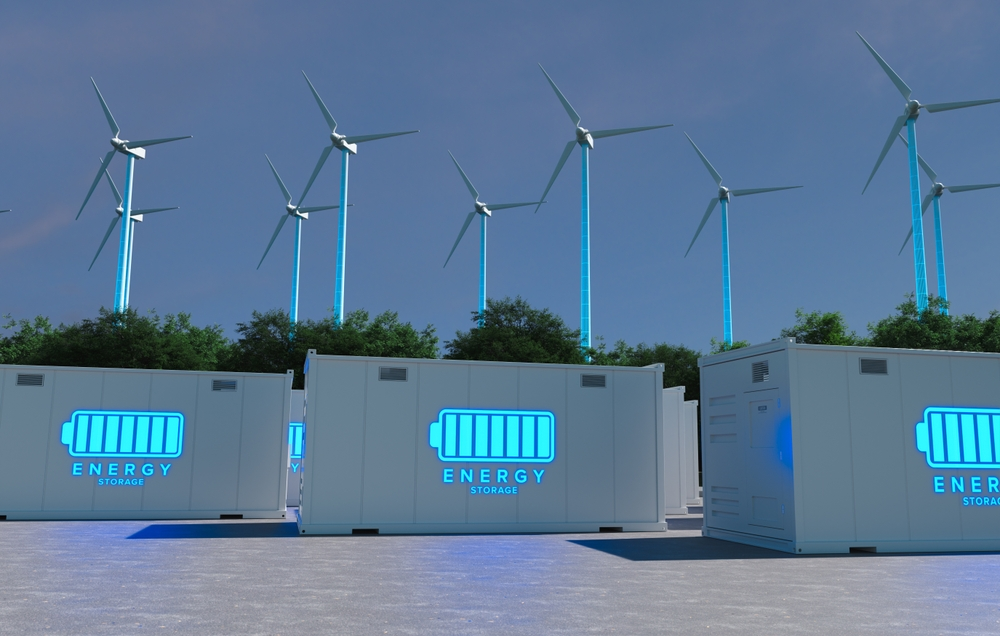
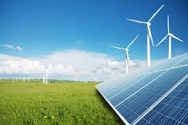

AFFORDABLE AND CLEAN ENERGY
Ensure access to affordable and clean energy for all
Sustainable Development
Sustainable Development
Sustainable living is becoming more practical because modern energy technology is improving quickly. Today, innovation is not only about producing clean electricity. It is also about storing energy better, reducing waste at home, improving heating systems, and making transport cleaner and smarter. These changes are closely linked to Sustainable Development Goal 7 because they help make energy cleaner, more reliable, and more useful in daily life.

Solar technology is becoming more efficient and practical.
Solar power is one of the most important innovations for sustainable living because it turns sunlight into electricity without burning fossil fuels. Recent research is making solar cells more efficient, which means a smaller area can produce more energy than before. This is especially useful for homes, schools, offices, and public buildings where roof space may be limited.
New solar designs are helping clean energy become more realistic for everyday use. Instead of thinking of solar panels as a future idea, many people now see them as a practical way to lower electricity costs and reduce pollution. As solar technology improves, it can help communities generate more clean power while depending less on non-renewable energy sources.

Smart systems can help households manage electricity more efficiently.
Another important innovation is the smart home energy management system. These systems help people understand how electricity is used inside the home and can control devices in a more efficient way. For example, a smart system may reduce energy waste by running some devices at better times or by helping users identify which appliances use the most power.
This makes sustainable living easier because people do not need to guess how to save energy. Smart tools can provide useful information and support better decisions. Over time, this can reduce waste, lower energy bills, and improve the overall efficiency of a home or building.

Heat pumps are becoming a cleaner and more efficient way to heat homes.
Heating uses a large amount of energy in many buildings, so cleaner heating systems are a major part of sustainable living. Heat pumps are important because they can provide heating more efficiently than many traditional systems. Instead of generating heat in the older way, they move heat from one place to another, which helps reduce wasted energy.
Heat pumps are useful because they can improve comfort while also lowering emissions. This means sustainable living is not only about protecting the environment. It is also about improving everyday life in a practical way. Cleaner heating can make homes more comfortable, reduce pollution, and support long-term energy efficiency.

Electric vehicles are becoming more common and smarter to charge.
Sustainable living also includes the way people travel. Electric vehicles are becoming more popular because they can reduce reliance on petrol and diesel. However, innovation in this area is not only about the vehicle itself. Smart charging is also important because it helps electric vehicles charge in a more efficient and flexible way.
This means transport can become cleaner while also working better with the electricity system. In the future, smart charging may help reduce pressure on the grid by charging cars at better times. As more people use electric vehicles, this type of innovation can support a more balanced and sustainable energy system.

Energy storage helps make renewable electricity more reliable.
Clean energy sources such as solar and wind are strongest when extra electricity can be stored and used later. This is why battery storage is one of the most important innovations linked to sustainable living. Storage systems help keep electricity available even when the sun is not shining or the wind is not strong.
Better storage makes renewable energy more dependable for homes, businesses, and communities. It supports a more stable energy system and allows cleaner electricity to be used more effectively. As storage technology improves, it will become easier to build daily life around renewable power instead of relying heavily on fossil fuels.

Clean energy innovation can improve everyday life and support a sustainable future.
These innovations matter because they show that sustainable living is becoming more possible in real life. Better solar panels can produce more clean electricity. Smart homes can reduce waste automatically. Heat pumps can improve heating efficiency. Electric vehicles can make transport cleaner, and battery storage can help renewable energy stay reliable.
Together, these changes support the main idea of SDG 7: clean, affordable, and modern energy for everyone. They also show that innovation is not only about new machines or advanced systems. It is about improving daily life, reducing environmental harm, and helping people live in a more responsible and sustainable way.